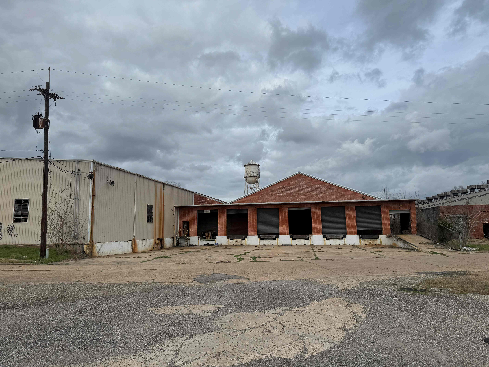

Building Detail
20 site photos analyzed. Each building assigned by function.

Clear-Span Warehouse
Massive clear-span interior, steel frame, concrete floor, 25-30 ft ceilings. Skylights confirm intact roof structure. NVL72 racks go here on raised pedestals with underfloor airflow. HVLS ceiling fans for circulation. Desiccant dehumidification to keep 40-50% RH. Water tower cooling loop + dry coolers on the infrastructure yard behind.
Roof solar: ~330 kW (600 panels)
Rack capacity: 36-84 NVL72 racks
Elevated racks + underfloor airflow
HVLS fans + desiccant dehumidification

Infrastructure Yard (Concrete Pad)
Former metal building footprint — 28,000 sq ft of heavy-duty concrete. Clear, flat, accessible from road. This is where the power scales: natural gas gensets, transformer/switchgear yard, dry coolers (backup to water tower), battery storage, diesel emergency genset. Visible from US 90 — make it look professional, it's marketing.
Phase 3: Diesel genset + switchgear
Phase 5+: Nat gas gensets (3-6 MW)
Battery storage as funded

Water Tower — Dual Purpose
Classic elevated steel water tank, ~60-80 ft tall, 15,000+ gallon capacity. Currently an eyesore — sandblast, prime, paint dark navy blue. But it's not just a sign. Repurposed as thermal buffer tank in the liquid cooling loop: hot water from NVL72 racks pumps up, gravity-feeds cold water back down to CDUs. The tower is a giant radiator — steel surface area, elevated in the wind, natural convection 24/7. In winter, may handle cooling load alone. Acts as a cooling UPS — if pumps trip, gravity-fed reserves buy 10-15 minutes. Nobody else in the neocloud space has this.
Logos: NVIDIA, ADC, First Solar, UL, City
Cooling: Thermal buffer tank (15K+ gal)
Gravity-fed return to CDUs (no pump needed)
Priority: DO FIRST

Metal Warehouse
Cream/tan metal-sided warehouse. Large footprint, flat metal roof — easiest solar installation on site (clamp-on rail mounts). Interior for staging, storage, future compute expansion.
Roof solar: ~220 kW (400 panels)
Roof type: Standing seam metal (ideal)

Partner Hub (Loading Dock Building)
Red brick with loading bays, hip roof. Restore the facade, convert bays to entrance/lobby. Everyone gets a space with their name on the door: ADC operations, NVIDIA regional presence, UL Lafayette research liaison, First Solar O&M monitoring, City of Lafayette smart city coordination. Shared conference room for partner meetings, investor tours, city council presentations. Everyone has skin in the game.
Roof solar: ~165 kW (300 panels)
Tenants: ADC, NVIDIA, UL, First Solar, City
Shared: Conference room, lobby, reception

Riverfront Building (2-Story) + Riverwalk
Two-story red brick, directly on the Vermilion River. Solid masonry construction. 2nd floor: NOC with 6-screen display wall and river views. 1st floor: edge compute, workshops, client demos. Restored brick = the showcase. Rebuild the seawall, add a riverwalk (~$50-100K) — outdoor meeting space, every photo backdrop. "The AI factory on the Vermilion River." Future: river heat exchanger for essentially unlimited cooling capacity.
NOC (2F): 6 screens — GPU health, fabric, power, cooling, workloads, security
1F: Edge compute, workshops, demos
Riverwalk: Seawall + walkway (~$50-100K)
River: Heat exchanger (future — unlimited cooling)

Power Infrastructure
Existing utility pole with transformer bank — three-phase power already on site. Elevated platform/substation structure. Grid interconnect exists. Solar inverters tie in here. Upgrade transformers as load grows.
Add: Solar inverters + switchgear
Add: Battery storage (future)
Add: Nat gas genset backup (future)

Campus Overview
View from the middle showing the metal warehouse (left), partner hub (center), main cannery (right), and water tower behind. Every rooftop gets covered in First Solar Series 7 panels. Concrete pad behind = infrastructure yard (gensets, switchgear, dry coolers). 46,000 sq ft of indoor compute space across three buildings. Power-limited, not space-limited.
Indoor compute space: 46,000 sq ft
Max capacity: 36-84 NVL72 racks (warehouse alone)
Full campus: 92-215 racks (all buildings)